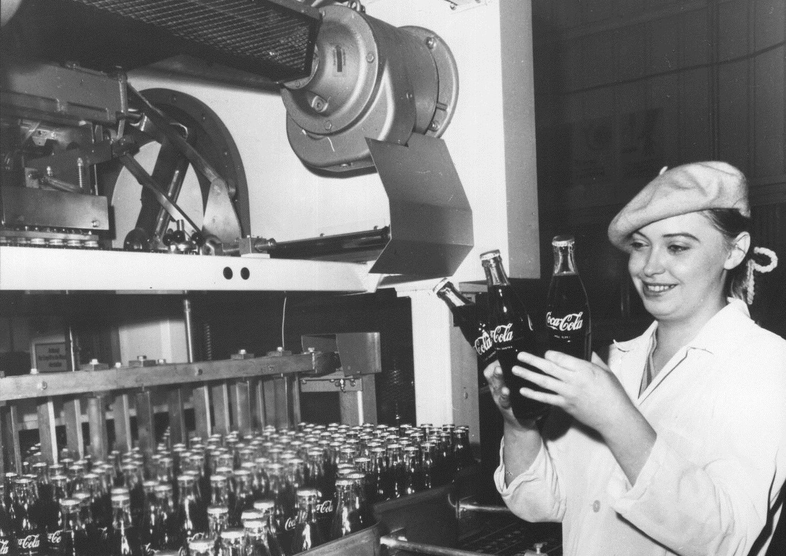
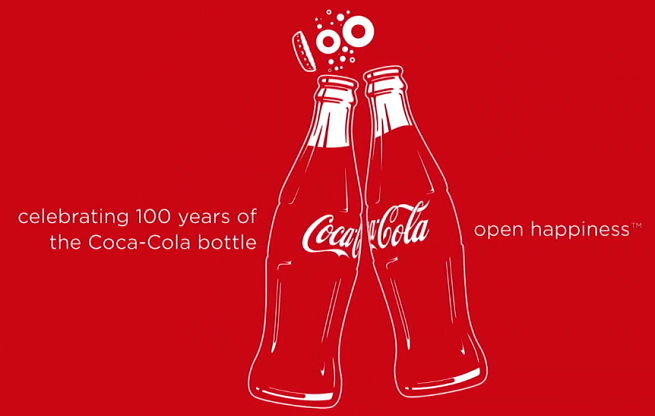

Historia Coca-Coli

Historia Coca-Coli rozpoczęła się w 1886 roku, kiedy aptekarz John Stith Pemberton z Atlanty opracował napój o nazwie "Pemberton's French Wine Coca". Początkowo napój zawierał alkohol, ale po uchwaleniu zakazu sprzedaży alkoholu w Georgii, Pemberton zmienił recepturę, tworząc wersję bezalkoholową, którą nazwał Coca-Cola. Współwłaścicielem firmy został Asher Candler, który przejął kontrolę nad marką i rozpoczął jej ekspansję. Coca-Cola zyskała popularność dzięki agresywnej strategii marketingowej i stała się jednym z najbardziej rozpoznawalnych napojów na świecie. W 1915 roku wprowadzono charakterystyczną butelkę w kształcie konturu. Dziś Coca-Cola jest symbolem globalnego sukcesu, sprzedawana w ponad 200 krajach i ciesząca się niezrównaną popularnością.
Coca-Cola, jeden z najbardziej rozpoznawalnych napojów na świecie, ma swoją historię, która zaczyna się w 1886 roku w Atlanty, gdzie aptekarz John Stith Pemberton stworzył początkowo napój alkoholowy, nazwany "Pemberton's French Wine Coca". Z powodu wprowadzenia zakazu sprzedaży alkoholu w stanie Georgia, Pemberton zmienił skład, tworząc wersję bezalkoholową. Receptura zawierała ekstrakt z liści koki oraz orzeszki kolowe, co miało na celu nadanie napojowi wyjątkowego smaku i właściwości pobudzających. Początkowo napój był sprzedawany jako lek w aptekach.
W 1888 roku Asher Candler przejął prawa do Coca-Coli, rozpoczynając agresywną strategię marketingową. To Candler rozwinął markę na szerszą skalę, wprowadzając reklamy, które przyciągały masową publiczność. W 1915 roku zaprezentowano słynną butelkę Coca-Coli o charakterystycznym kształcie, która stała się jednym z najbardziej ikonicznych elementów wizualnych marki. Z czasem Coca-Cola zyskała status globalnego fenomenu, a marka stała się symbolem amerykańskiej kultury.
Dziś Coca-Cola jest dostępna w ponad 200 krajach i należy do największych firm napojowych na świecie, z niezliczoną liczbą produktów i wersji smakowych.
Kampanie

Kampanie marketingowe Coca-Coli są jednymi z najbardziej rozpoznawalnych i efektywnych na świecie. Firma od zawsze stawiała na innowacyjne podejście do reklamy, tworząc emocjonalne i zapadające w pamięć spoty. Jednym z najbardziej ikonicznych przykładów była kampania "Share a Coke", która zadebiutowała w 2011 roku w Australii. W ramach tej kampanii, na butelkach Coca-Coli zamiast tradycyjnego logo pojawiły się imiona. Celem było zachęcenie konsumentów do dzielenia się napojami z przyjaciółmi i rodziną. Kampania zyskała ogromną popularność na całym świecie, a jej sukces polegał na personalizacji produktu i angażowaniu ludzi do interakcji z marką. Ta inicjatywa podkreśliła ludzką stronę Coca-Coli i jej rolę w tworzeniu wspólnych, radosnych chwil.
Innym przykładem skutecznej kampanii jest reklama "Open Happiness", która rozpoczęła się w 2009 roku. Skupiała się na pozytywnych emocjach, jakie wywołuje napój Coca-Cola. Reklama przekonywała konsumentów, że otwierając butelkę Coca-Coli, otwierają drzwi do radości i szczęścia. Hasło "Open Happiness" stało się hasłem rozpoznawalnym na całym świecie, a sama kampania miała charakter globalny, pojawiając się w telewizji, internecie i na billboardach. Coca-Cola wykorzystała także elementy popkultury, angażując celebrytów oraz organizując wydarzenia, które promowały pozytywne wartości związane z marką.
Coca-Cola jest również pionierem w wykorzystywaniu świąt i wydarzeń okolicznościowych do budowania swojego wizerunku. Kampania "Holidays are Coming", która po raz pierwszy pojawiła się w latach 90., stała się niemal coroczną tradycją. Reklama przedstawiająca świąteczne ciężarówki Coca-Coli, które przemierzają zaśnieżone krajobrazy, jest jednym z najbardziej rozpoznawalnych symboli świąt na całym świecie. Ta kampania doskonale oddaje misję Coca-Coli, by łączyć ludzi w chwilach radości, a jednocześnie podkreślać, jak ważne są tradycje i wspólne przeżywanie wyjątkowych momentów. Dzięki tak przemyślanym kampaniom, Coca-Cola nie tylko sprzedaje napój, ale tworzy emocjonalną więź z konsumentami, co zapewnia jej globalny sukces na rynku.